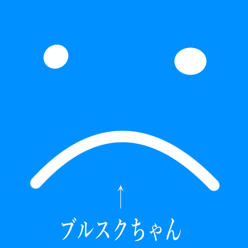
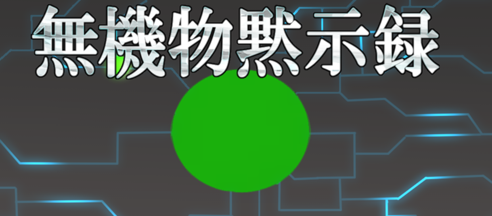

No.01

幽世縁起
制作期間：2026年2月〜11月（1人／個人制作）
最大９９９階層まで潜れる3Dアクションゲーム 敵を倒しステータスをアップしたり宝箱を漁り武器を強化し敵を無双することができます。
- 担当範囲
- 使用技術
ゲームは
一発芸人ではない。
Game Developer Portfolio
～ Works of a Solo Game Developer

はじめまして、楓です。
C++ / DirectX 11 でゲームを作ってる人です。
プログラム・イラスト・サウンドまで一人で手がける個人制作を中心に活動しています。 分野を問わず作ることに喜びを感じる人です。
| 名前 | 楓 |
|---|---|
| 所属 | 神戸電子専門学校 ゲーム開発研究学科 |
| 志望職種 | ゲームプログラマ |
| 好きなジャンル | 2d縦シューティング |
制作期間：2026年2月〜11月（1人／個人制作）
最大９９９階層まで潜れる3Dアクションゲーム 敵を倒しステータスをアップしたり宝箱を漁り武器を強化し敵を無双することができます。

制作期間：2025年7月〜2026年1月（1人／個人制作）
荒廃した世界を舞台に、 ウィルスに侵されたロボットと戦っていく 3Dアクションゲームです。